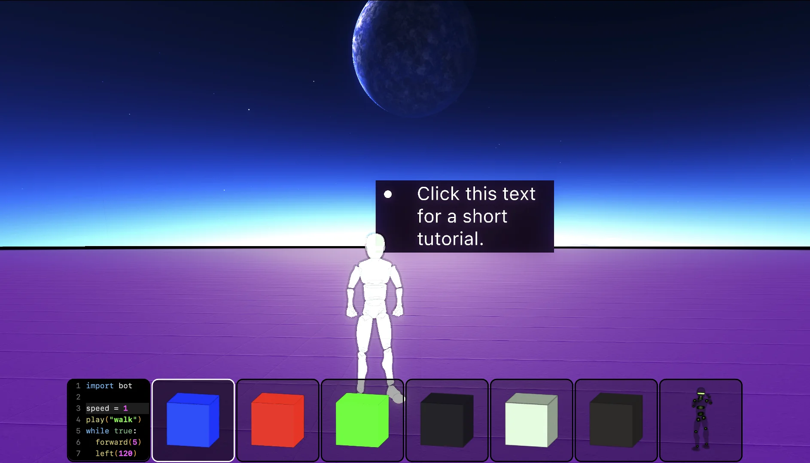
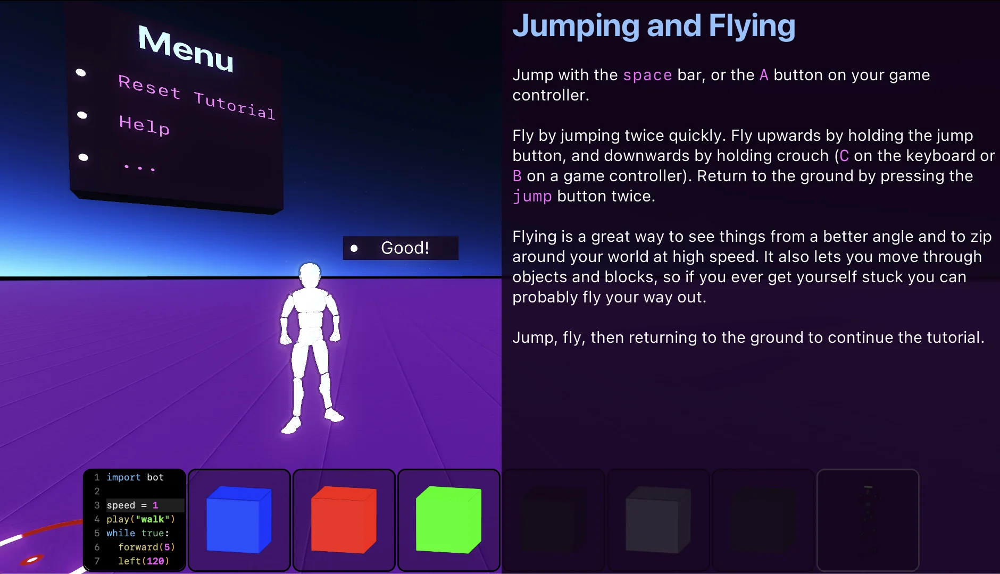
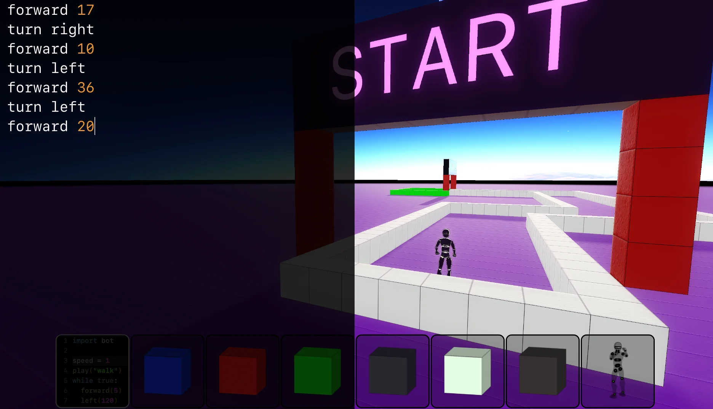

Tutorial
When you launch Enu for the first time, it will bring you through a simple tutorial.

Moving
Move with the W, A, S, and D keys, or with the left stick of your game
controller. Look around with the mouse, trackpad, or right stick of your game
controller.
Close help or code windows with ESC on your keyboard or B on your
controller. You can also move without closing the window by using your
controller, or by holding down left alt/option (⌥) on your keyboard.
Jumping and Flying

Jump with the space bar, or the A button on your game controller.
Fly by jumping twice quickly. Fly upwards by holding the jump button, and
downwards by holding crouch (C on the keyboard or B on a game controller).
Return to the ground by pressing the jump button twice.
Flying is a great way to see things from a better angle and to zip around your world at high speed. It also lets you move through objects and blocks, so if you ever get yourself stuck you can probably fly your way out.
Changing tools
Tools are selected from the Tool Bar at the bottom of the screen.
Change tools with the keyboard keys 1 - 8, the L1 and R1 controller
buttons, or by releasing the mouse with ESC and selecting a tool with the
mouse pointer.
Enu currently has 8 tools. Tool 1 on the left is the Code tool. It can
program almost anything in Enu, and will be explained in more detail later.
Tool 8 on the right is the Place Bot tool. Use it to fill your world with
friendly robots. Tools 2 - 7 are the blue, red, green, black,
white, and brown colored blocks.
Bots
Bots are NPCs in Enu, and can be programmed to explore, change their
appearance, or offer information.
They can be placed with the left mouse button or the R1 gamepad trigger.
Coding Enu

We control Enu using Nim, a powerful programming language that's useful for a wide variety of tasks. Almost everything in Enu can be coded with Nim.
With the Code tool selected, you can code anything you've created by clicking
on it with the left mouse button, or R1 on the controller
Coding Bots
We control bots with simple commands like forward and turn. Here's some
example code to get a Bot through the course in Enu's tutorial:
forward 17
turn right
forward 10
turn left
forward 36
turn left
forward 20
Run your code by pressing left alt/option (⌥). Keep left alt/option (⌥) held
down to move around while you're coding. Flying is a great way to get yourself
into position to see what's happening, so try double jumping to get a better
view.
If your Bot is moving too slowly for your tastes, make her run by setting the
speed value.
speed = 10
forward 17
turn right
# ...
Next Steps
Full controls for Enu can be found elsewhere in the docs, along with a quick overview of using Nim to code Enu.